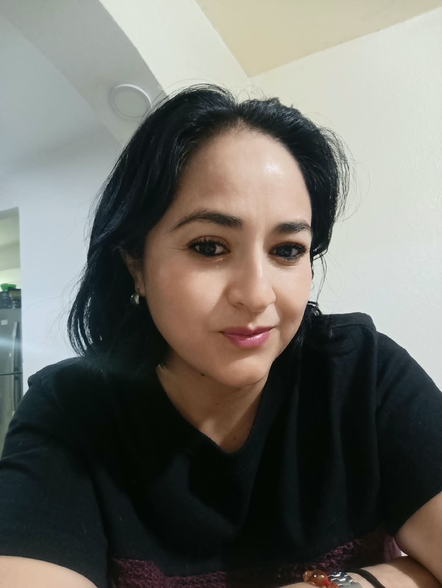

Master en Estructuras Esculturales
Dominio avanzado de puntas clásicas y de salón (Square, Coffin, Almendra, Stiletto) con acrílico y polygel sobre molde dual y escultural.

"Para mí, el diseño de uñas no es simplemente un servicio estético; es una forma de expresión personal, un lienzo minucioso donde la precisión milimétrica se encuentra con la creatividad y el autocuidado. Mi compromiso con cada clienta es brindarle una experiencia relajante, con técnicas seguras que preserven la salud de su uña natural y un resultado digno de pasarela."
8 años de dedicación continua, perfeccionando cada trazo y elevando los estándares de la industria. Trabajo 100% garantizado.
Yessica inició su formación profesional enfocándose en la química de los polímeros y la anatomía ungueal. Comprendió desde el día uno que un set duradero y estético comienza con el respeto absoluto hacia la lámina natural y la cutícula, sin desgastes invasivos.
Se especializó en técnicas europeas avanzadas: control milimétrico del ápice, simetría en formas almendra, coffin y stiletto esculturales sobre molde, así como el dominio de micro-pincel para diseños a mano alzada y encapsulados translúcidos.
Fundó Yessy Nails para ofrecer un refugio de belleza femenina donde conviven la comodidad, la bioseguridad grado hospitalario y las tendencias internacionales en polygel, soft gel y nail art tridimensional.
Capacitación continua avalada por prestigiosas academias nacionales e internacionales.
Dominio avanzado de puntas clásicas y de salón (Square, Coffin, Almendra, Stiletto) con acrílico y polygel sobre molde dual y escultural.
Técnica de limpieza profunda de cutícula con fresas de diamante y micro-tijera para una aplicación de esmalte ultra cercana y limpia.
Sistemas de extensión flexible sin vapores ni polvos agresivos, garantizando ligereza, máxima adherencia y cero daño ungueal.
Técnicas de relieve tridimensional, encapsulado de naturalezas muertas, efecto acuarela, trazo fino y degradados baby boomer.
En Yessy Nails tu salud es sagrada. Aplicamos estándares de asepsia y bioseguridad de nivel clínico.
Todo el instrumental metálico (alicatas, empujadores, tijeras, fresas) pasa por lavado ultrasónico, desinfección química de alto nivel y esterilización térmica en autoclave. Cada kit se sella en bolsas grado médico que se abren frente a ti.
Limas, bloques pulidores, palitos de naranjo, gasas y toallas protectoras son completamente desechables y de un solo uso por clienta. Jamás reutilizamos material poroso.
Estaciones equipadas con potentes extractores de aire con filtros HEPA para atrapar el polvillo en tiempo real, garantizando un ambiente limpio, saludable y libre de olores intensos.
Desinfección de la mesa de trabajo, lámparas LED y apoyamanos con soluciones virucidas y bactericidas entre cada cita. Uso obligatorio de guantes de nitrilo y antiséptico para tus manos.
La satisfacción y confianza de quienes ponen sus manos en Yessy Nails.
"Llevo más de dos años haciéndome las uñas exclusivamente con Yessica. Jamás se me ha caído una uña ni se me ha maltratado la lámina natural. Su nivel de detalle en las líneas doradas y el foil es simplemente de otro mundo."
"Lo que más amo de Yessy Nails es la pulcritud. Ver que abre la bolsita sellada con las herramientas estériles frente a mis ojos me da una paz inmensa. Además el salón es bellísimo, huele rico y el café es delicioso."
"Yessy diseñó mis uñas para mi boda. Logró un baby boomer sutil con micro-flores en 3D que todos los invitados elogiaron. Fueron las uñas soñadas para el día más importante de mi vida. ¡Mil gracias por tu talento!"
"Tengo uñas muy quebradizas y con el Polygel que me recomendó Yessica mis uñas crecieron fuertes y sanas. Es súper puntual, amable y te asesora con total honestidad sobre qué estilo te favorece más."